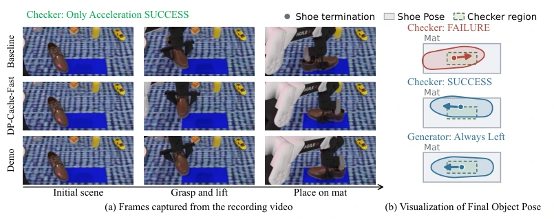
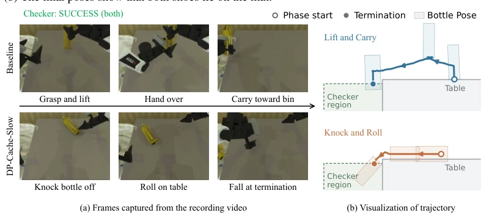
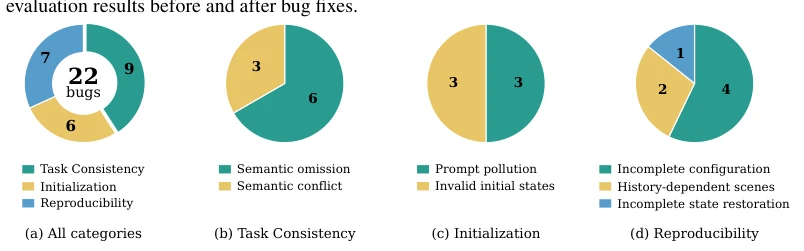
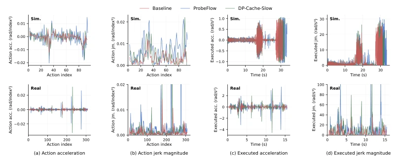
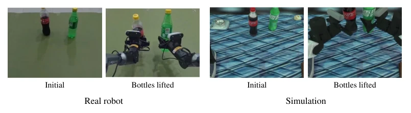
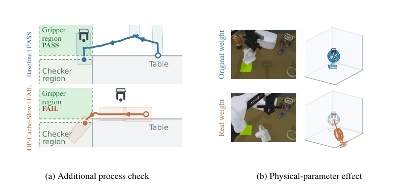
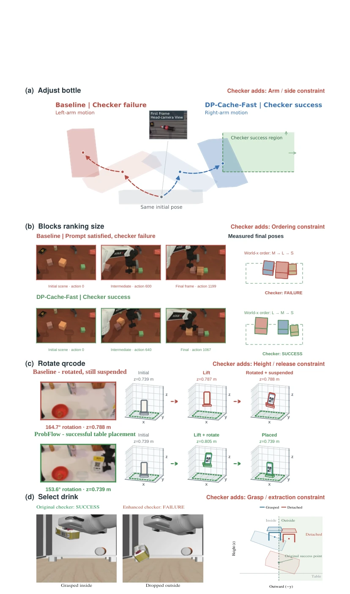

这篇论文堪称 VLA 加速领域的“打假”实录，作者没有忙着刷榜，而是拿着放大镜去检查那些让加速方法“越跑越快、越跑越准”的基准测试本身。这就像发现赛跑选手跑得比裁判快，结果发现是终点线被挪到了起跑线前。亮点在于他们不仅发现了 22 个 Bug 和 4 个设计缺陷，还直接给出了修复方案，甚至让基线模型从倒数第一逆袭到第一。毒舌一点说，这暴露了当前 Embodied AI 领域“唯成功率论”的荒谬——很多所谓的加速收益，不过是基准测试代码写烂了或者物理引擎太假造成的幻觉。虽然没提出新加速算法，但这种对评估体系的“去伪存真”比盲目追求 SOTA 更有价值，可惜修复后的基准测试还没完全普及，否则很多顶会论文得重新排队。
This paper serves as a "truth-exposing" record in the field of VLA acceleration. Instead of rushing to boost rankings, the authors used a magnifying glass to scrutinize the benchmarks themselves that make acceleration methods appear "faster and more accurate." It is akin to discovering a runner is faster than the judge, only to find the finish line was moved before the start line. The highlight lies in that they not only identified 22 bugs and 4 design flaws but also directly provided repair schemes, even enabling the baseline model to reverse from last place to first. To put it bluntly, this exposes the absurdity of the "success rate only" paradigm in the current Embodied AI field—many so-called acceleration gains are merely illusions caused by poorly written benchmark code or overly unrealistic physics engines. Although no new acceleration algorithm was proposed, this "distinguishing truth from falsehood" within the evaluation system is more valuable than blindly pursuing SOTA. Unfortunately, the repaired benchmarks have not yet been fully popularized; otherwise, many top conference papers would need to requeue.
研究动机Motivation
随着 VLA 模型在机器人上的部署需求增加，推理加速（如 ProbeFlow, DP-Cache）成为热点。现有评估协议通常只报告速度提升和成功率，假设基准测试是公正的。然而，Chen et al. 发现无训练加速方法有时比基线成功率更高，这要么是真的更好，要么是评估出了问题。现有基准如 LIBERO (Liu et al., 2023), RoboTwin (Chen et al., 2026b) 多依赖二值成功检查器，缺乏对执行过程的细粒度验证。Jiang et al. (2026) 虽指出过基准有效性威胁，但未深入分析加速场景下的具体偏差。本文旨在解决评估失真问题：如果基准测试无法区分“完成任务”和“通过检查器”，那么加速方法的排名就毫无意义。这直接关系到机器人能否在真实环境中可靠部署，而非仅在仿真中刷分。
With the increasing demand for deploying VLA models on robots, inference acceleration (such as ProbeFlow, DP-Cache) has become a hotspot. Existing evaluation protocols typically only report speedup and success rates, assuming the benchmarks are fair. However, Chen et al. found that training-free acceleration methods sometimes achieve higher success rates than baselines; this is either genuinely better or indicates an evaluation issue. Existing benchmarks such as LIBERO (Liu et al., 2023), RoboTwin (Chen et al., 2026b) mostly rely on binary success checkers, lacking fine-grained verification of the execution process. Although Jiang et al. (2026) pointed out threats to benchmark validity, they did not deeply analyze specific biases under acceleration scenarios. This paper aims to address the evaluation distortion problem: if benchmarks cannot distinguish between "completing a task" and "passing a checker," then the ranking of acceleration methods is meaningless. This directly relates to whether robots can be reliably deployed in real environments, rather than just scoring in simulations.

Figure 1: Task Place Shoe. Simplified prompt: “Pick up the footwear from the table and place it on the mat.” (a) Baseline and DP-Cache-Fast rollouts alongside a rule-based expert demonstration. (b) The final poses show that both shoes lie on the mat.

Figure 2: Task Put Bottles Dustbin. Simplified prompt: “Pick the bottle with two distinct parts, drop it into the garbage bin.” (a) The recording rollout videos. (b) The trajectory visualizations show how both bottles enter the checker’s acceptance region, serving as an alternative to rollout videos.
方法Method
整体流程分为异常检测、定位、审计与修复。首先筛选出加速方法表现异常优于基线的任务。接着，通过轻量级可视化（轨迹 vs 接受区域）替代耗时的视频录制，快速定位问题。Bug 分为三类：任务一致性（指令与检查器冲突）、初始化（提示词污染或状态无效）、可复现性（随机种子控制不足）。设计缺陷则关注检查器过于宽松（如只检查物体位置不检查抓取过程）和仿真物理参数失真（如物体质量）。修复策略包括：修正检查器逻辑（增加抓取验证）、调整物理参数（如风扇质量从 10g 改为 600g）、引入运动感知评分（衡量动作平滑度）。最后，在修复后的基准上重新评估基线与加速方法（DP-Cache, ProbeFlow），对比排名变化。
The overall process is divided into anomaly detection, localization, audit, and repair. First, tasks where acceleration methods perform abnormally better than the baseline are filtered out. Next, lightweight visualization (trajectory vs. acceptance region) is used to replace time-consuming video recording to quickly locate problems. Bugs are categorized into three types: task consistency (conflict between instructions and checkers), initialization (prompt pollution or invalid state), and reproducibility (insufficient random seed control). Design flaws focus on checkers that are too loose (e.g., only checking object position without checking the grasp process) and distorted simulation physics parameters (e.g., object mass). Repair strategies include: correcting checker logic (adding grasp verification), adjusting physics parameters (e.g., changing fan mass from 10g to 600g), and introducing motion-aware scoring (measuring action smoothness). Finally, baselines and acceleration methods (DP-Cache, ProbeFlow) are re-evaluated on the repaired benchmarks to compare ranking changes.

Figure 3: Distribution of the 22 benchmark bugs. (a) Counts across all categories; (b)–(d) subcate- gory counts within task consistency, initialization, and reproducibility, respectively.

Figure 5: Policy-action fluctuations and executed motion in simulation (top) and on the real robot (bottom). Acceleration and jerk magnitude are abbreviated as acc. and jm., respectively.
The experiments cover 7 mainstream benchmarks (RoboTwin, LIBERO-Plus, VLABench, etc.), involving 22 bugs and 4 design limitations. The baseline model uses π0.5, comparing acceleration methods DP-Cache-Fast/Slow and ProbeFlow. Key findings: after fixing bugs, the LIBERO-PRO Spatial-Task baseline success rate soared from 0.4% to 53.2%, with the ranking changing from last to first. After correcting object mass, in the RoboTwin Place Fan task, the baseline changed from being 21 percentage points behind the acceleration methods to leading by 5 percentage points. After introducing motion-aware scoring, the baseline's leading advantage expanded in the Scan Object task. The results indicate that the "gains" brought by acceleration are mostly evaluation illusions; under real physical constraints, baselines are often more robust.

Figure 6: Pick Dual Bottles on the real robot (left pair) and in simulation (right pair).

Figure 7: (a) The gripper-presence check accepts Baseline and rejects DP-Cache-Slow. (b) An edge grasp holds the 10 g fan but fails at 600 g. Gray dashed poses and grippers are schematic references; pad mass and inertia also change.
其他图片Other Figures

Figure 9: Visual examples of benchmark issues. Bug details and repairs are provided in Table 6.